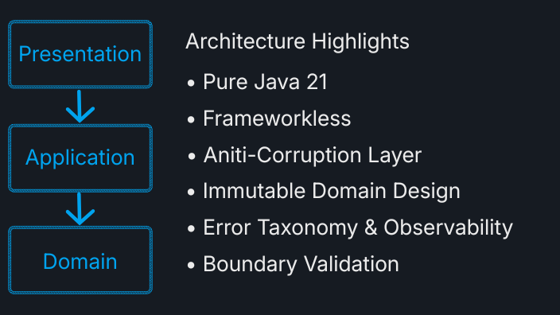
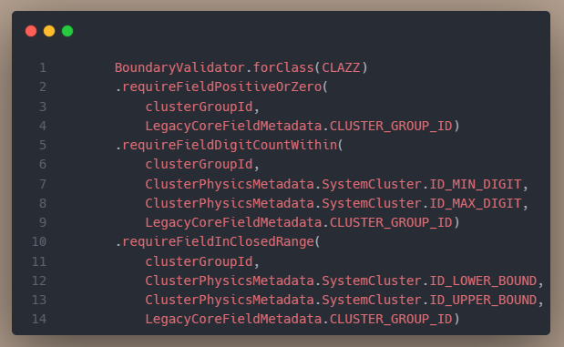

Architectural Highlights

- Hybrid Architecture Approach: Combines Vertical Slice Architecture, Domain-Driven Design (DDD), and Clean Architecture concepts to organize responsibilities and maintain clear boundaries between system concerns.
- Frameworkless Composition Root: Implements a lightweight dependency composition approach using constructor injection and a stateless Bill Pugh Singleton pattern instead of external dependency injection frameworks.
- Layered Validation Model: Separates inbound data validation from domain rules through dedicated contracts and invariant checks, preventing invalid states from entering core logic.
- Type-Safe Domain Modeling: Uses explicit types and adapters to reduce ambiguity in time-related operations and improve compile-time safety.
Snapshot
Boundary Defense: Validating external third-party blackbox type / field dependency.

Technical Capabilities
- Boundary Validation: Implements structured validation rules through BoundaryValidator to provide clear diagnostics when objects cross architectural boundaries.
- Domain-Oriented Components: Uses Java 21 language features and focused domain components to keep complex calculations isolated and testable.
- Defensive Utility Design: Includes low-level utility experiments for numeric processing and Unicode-aware string handling to explore safer input processing.
- Centralized Error Handling: Uses a presentation-layer error handling approach to separate technical diagnostics from user-facing messages.
GitHub
This repository contains the public portfolio version of the ACL project, including source code, architecture notes, and implementation details.
Access Repository← Back to Projects